Manual del usuario
Este manual busca explicar paso a paso cada una de las operaciones que se pueden realizar en la aplicación, es un manual muy gráfico, con lenguaje de fácil interpretación; y se construye de tal manera, que sea de fácil comprensión para los “usuarios finales” de la aplicación. Se espera despejar todas las dudas del lector y que al final el usuario logre manejar la aplicación correctamente.
Componentes
Algunos de los ítems que se deben relacionar en este manual son:
Alcance
Este manual describe la funcionalidad del aplicativo web de la empresa “planeadores” que permite llevar un mejor registro de sus agentes y ser más eficaz al momento de buscar, mostrar y eliminar la información. Para su correcto uso, seguir cuidadosamente cada uno de los pasos que explica cada opción
Requisitos de conocimiento para manejar el sistema
En este apartado se le informara los conocimientos que debe tener para manejar nuestro sistema, como lo son algunos de los que se enlistan a continuación:
- Informática básica.
- Manejo de Email y contraseña.
- Conocer las políticas de seguridad de la empresa como, por ejemplo, las políticas de ingreso, validación de usuarios y manejo de contraseñas Estos también se pueden estructurar por perfiles de usuario.
Requerimientos de hardware y software del equipo cliente
Requisitos de hardware:
- Computador con mínimo de 4 GB en RAM.
- Espacio libre en disco de 500 MB.
- Impresora láser (para impresión de listados).
Requisitos de software:
- Sistema operativo Windows 7 o posterior, Linux kernel 3.0 o MacOS versión 10.9 en adelante.
- Navegador Chrome versión 30 en adelante, Firefox versión 20 en adelante.
- Lector de archivos PDF como Acrobat Reader o similar.
Política de seguridad
Ingreso al sistema
1. En primera instancia se debe redireccionar a nuestra página web, por lo consiguiente estará viendo nuestro sistema de inicio de sesión, continuara con la acción de llenar los campos que están vacíos “Email y password”, cuando ya se encuentren estos campos llenos procederá a darle clic a el botón “Login”.
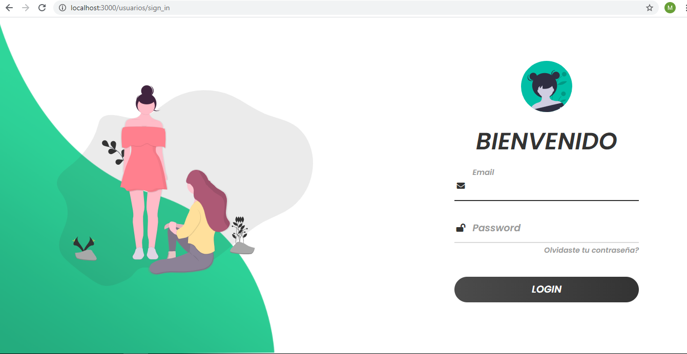Interfaz gráfica
1. Al momento de iniciar sección lo primero que se verá reflejado será la “Dashboard”, en la cual se puede apreciar tanto las estadísticas como también los botones de navegación (Agentes, Usuarios, Transacciones y Planeación).
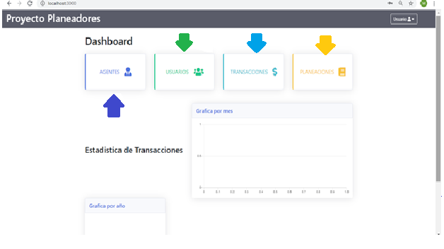2. Al momento de dar clic en el botón de agentes, es sistema se redireccionará a una tabla en la cual se verán reflejados todos y cada uno de los agentes; también cuenta con las opciones de crear un nuevo agente, ver al usuario ya creado (dando clic en el nombre podrá realizarlo) y de igual manera podrá editarlo y eliminarlo.
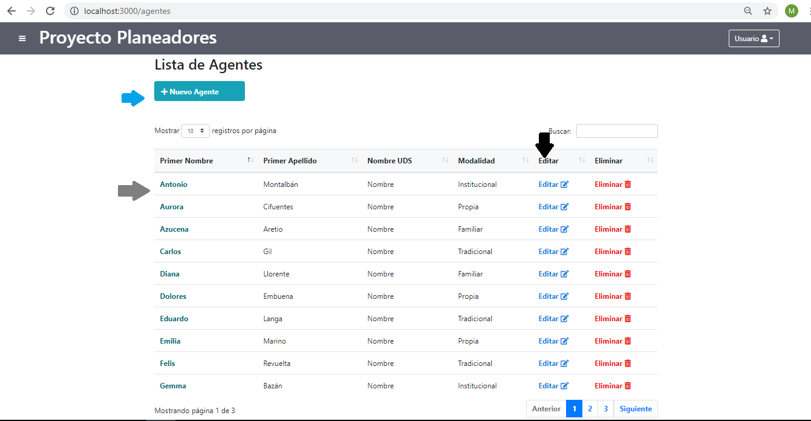3. En este apartado se podrá crear un nuevo agente (para que sea validado debe ser diligenciado de manera completa) dandi clic en “create agente”.
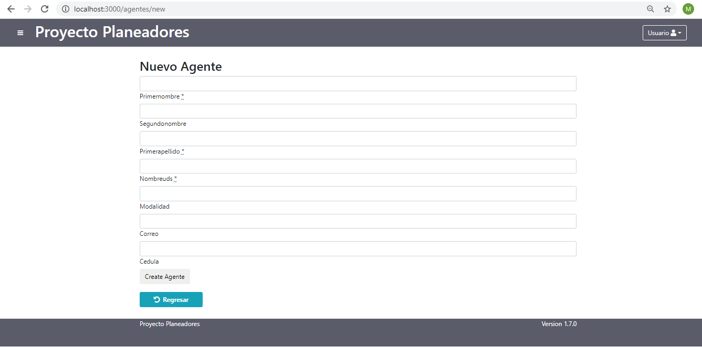4. Esta acción podrá ser realizada mediante el botón de editar (habilita todos los campos, de esta manera se podrán corregir los datos errados).
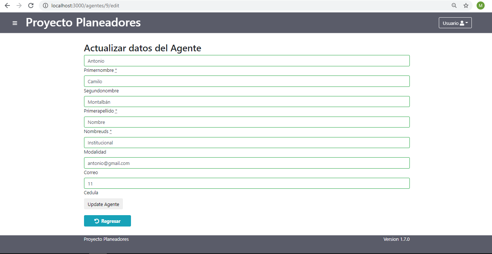5. Se puede llegar a esta parte con solo darle clic al nombre del agente; mediante esto podrá tanto editar como también ver sus planeaciones y transacciones.
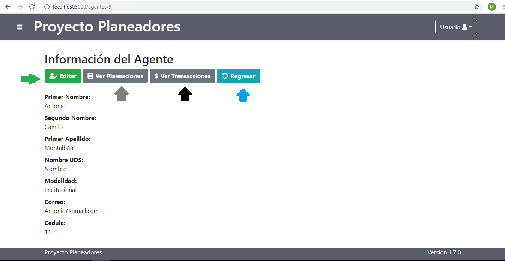6. Entramos a esta vista una vez se le haya dado clic al botón de usuarios, está a diferencia de “Agentes” muestra a los usuarios por correo.
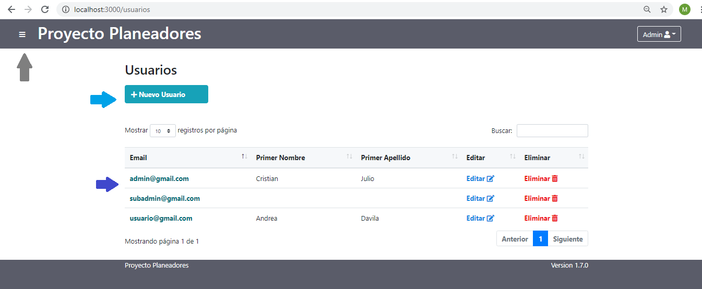7. Al darle clic al botón de “Crear usuario” de redireccionara a un formulario el cual está diseñado para crear un nuevo usuario al cual se le otorgara un rol.
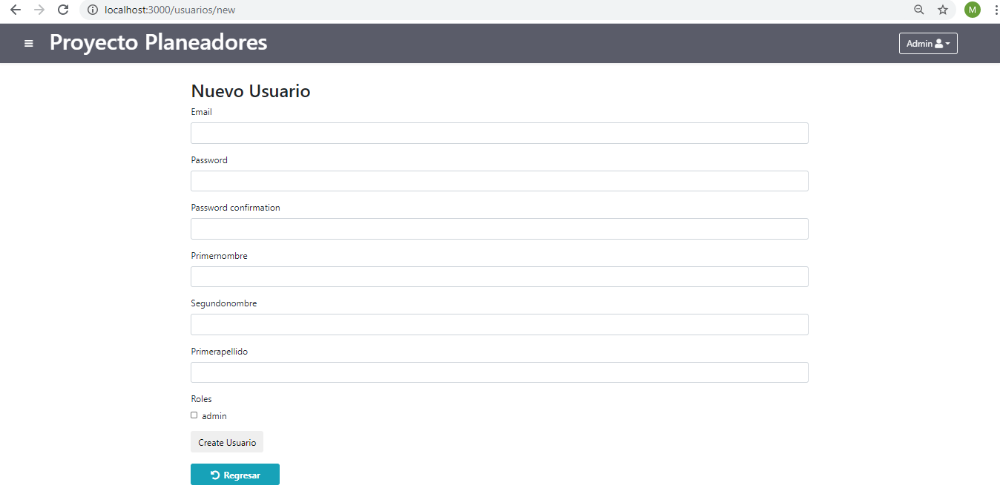8. Se puede ingresar a este apartado dando clic al correo, una vez hecho esto podrá ver la información del usuario, habilitando a su vez la función de editar.
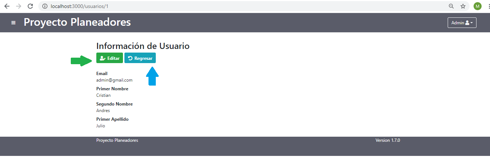9. Dándole al botón de editar, se habilitar un formulario en el cual se podrá reescribir en casi de haber cometido un error, al finalizar las correcciones solo basta con darle en “update usuario”.
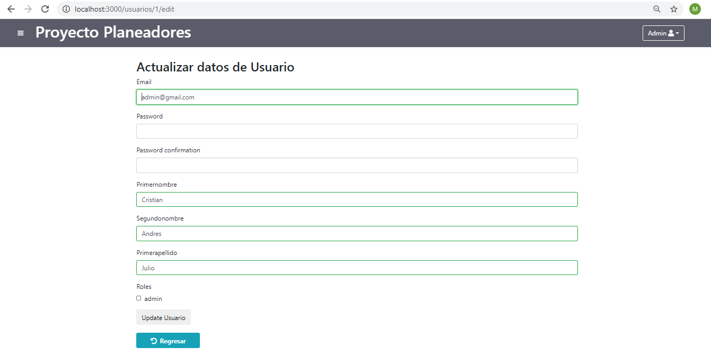10. Entramos a la parte de planeación (como ya es habitual) dando clic en el botón del mismo, una vez dentro, se podrá observar las opciones que traer consigo.

11. Al presionar el botón de “nueva planeación” se podrá crear una nueva, llenando los campos de “Formato, Temática y fecha de creación” y al finalizar solo queda dar clic en “créate planeación”.
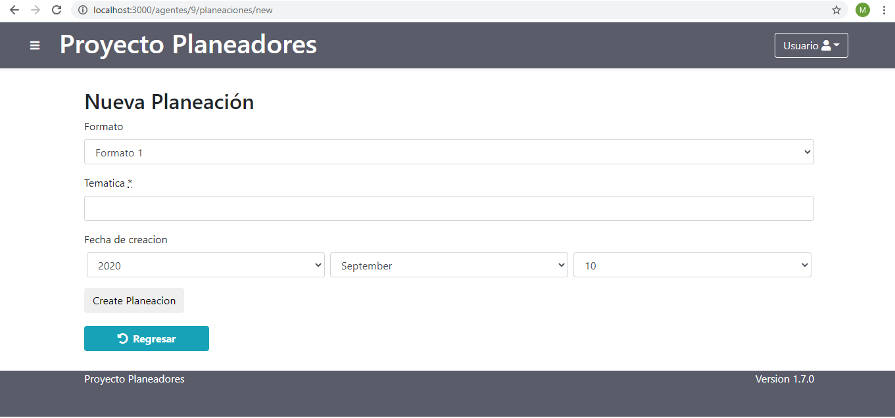12. Una vez ya se haya creado una planeación. Se podrá ver esta misma en la cual se podrá generar un archivo pdf (esto es por si la persona quisiera tener la planeación por escrito) pero también se encuentra la opción de editar para poder corregir si tuvo algún error.
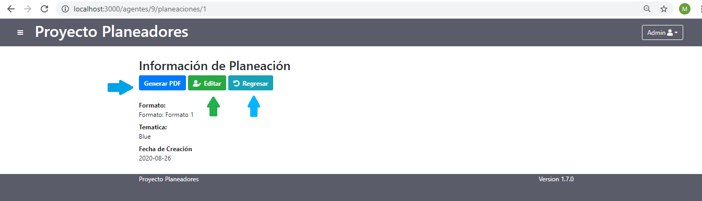13. Este formulario es revelado si se activa la opción de editar en planeaciones, tendrá que llenar todos los campos para poder guardar los campos.
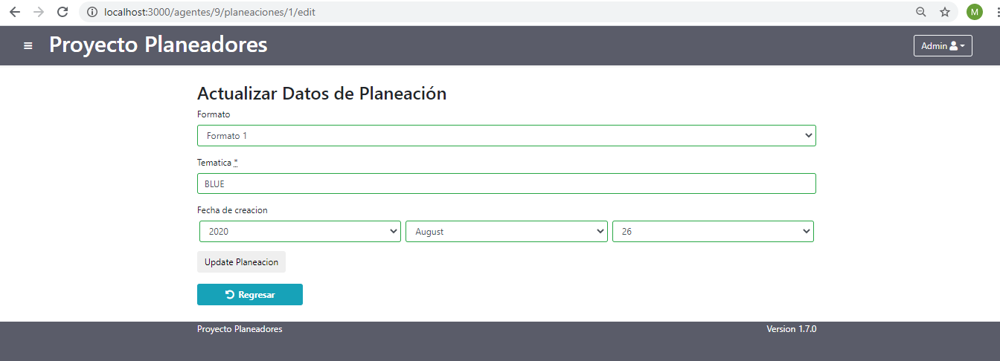14. Acedemos a esta parte dando clic al botón de transacciones, una vez dentro se puede ver cada transacción con sus respectivos datos.
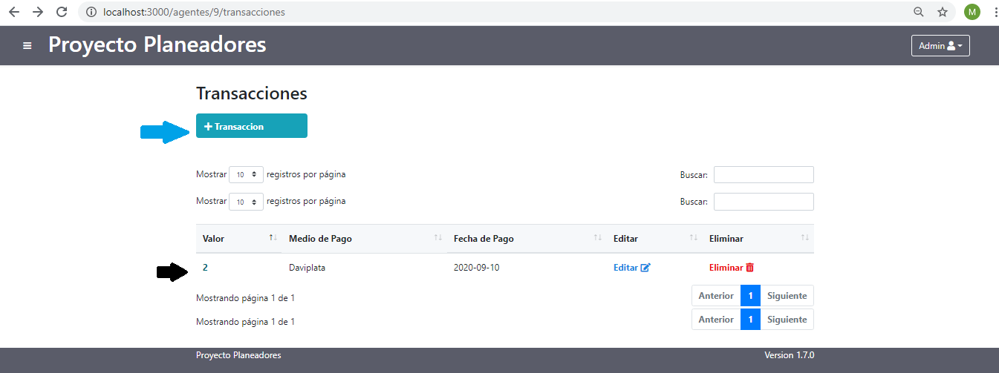15. A este apartado se puede acceder clicando en “+Transacción”, donde se procederá a designar un valor, seleccionar un método de pago y por último la fecha en la cual se está haciendo dicha transacción.
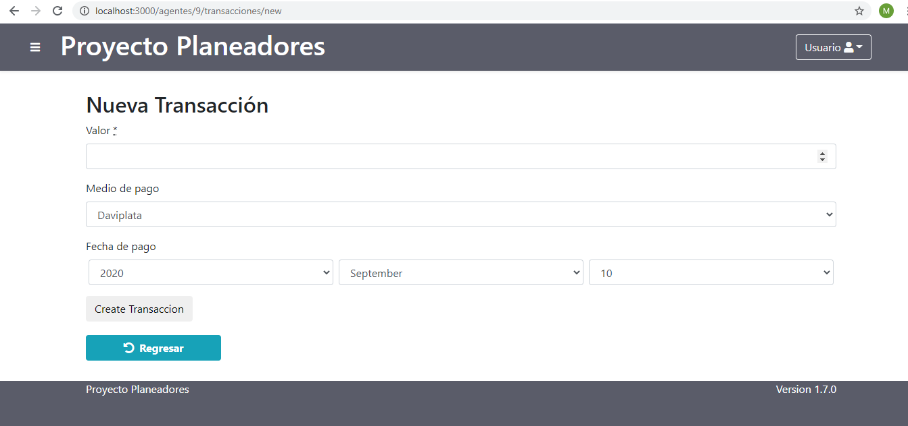16. Una vez se haya creado la transacción podremos proceder a generar la factura, pero también cuenta con una opción de editar.
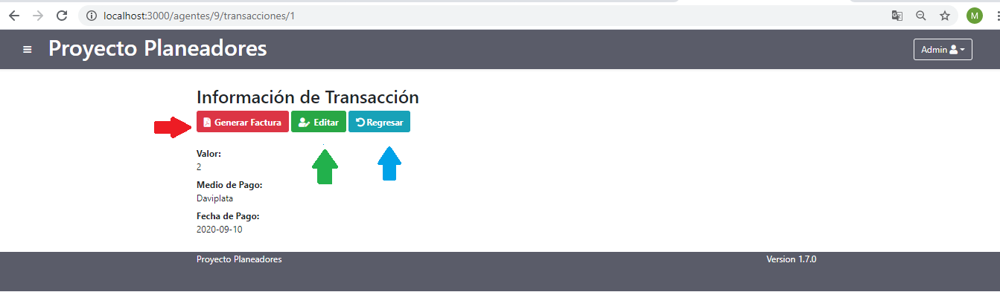17. Una vez dentro del apartado de editar se reactivarán los campos para realizar los cambios que desee.
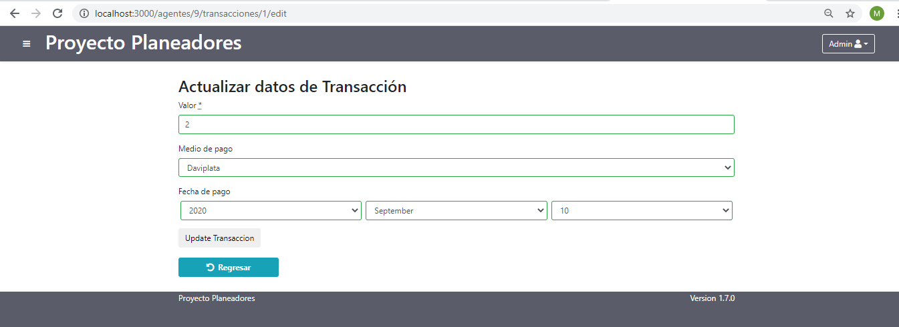Mapa de navegación
 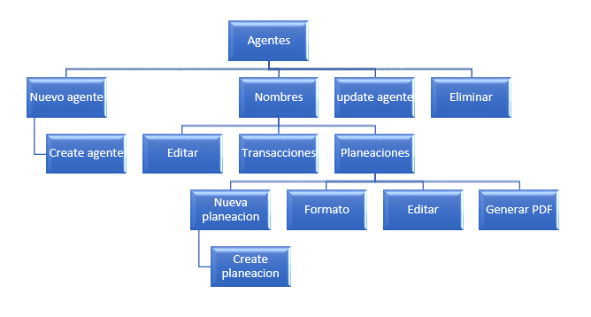
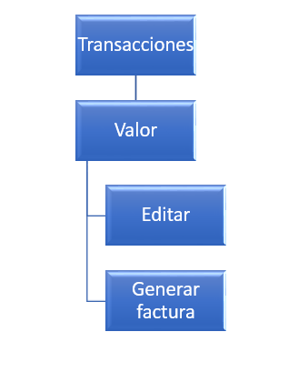
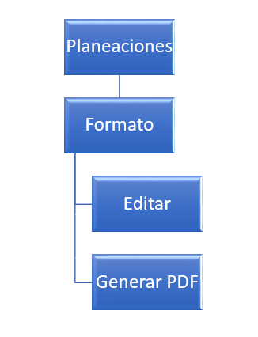
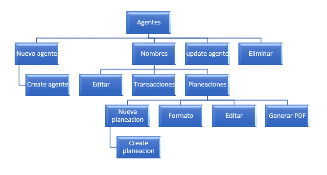
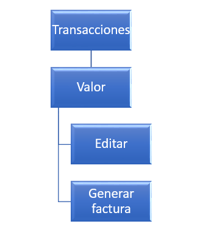
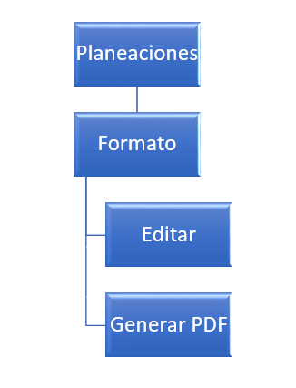
Información sobre la mesa de ayuda
Si cuenta con alguna inquietud o duda referente al manejo, desarrollo o movilidad en la página, por favor comunicarse con nuestro equipo de servicio al cliente.